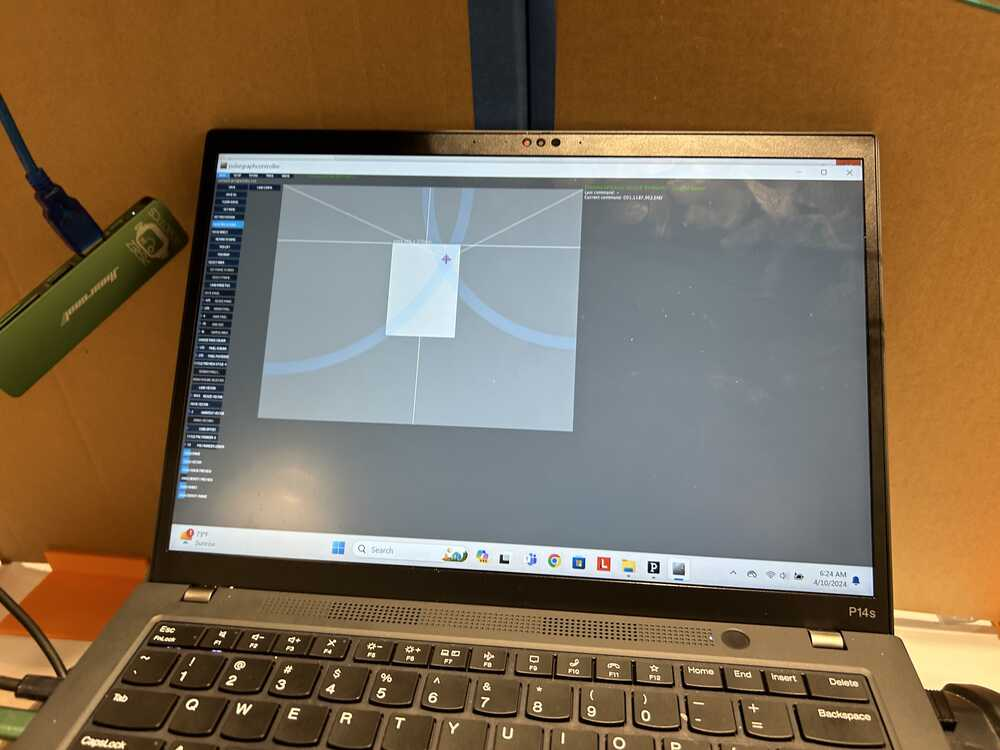
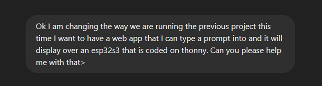
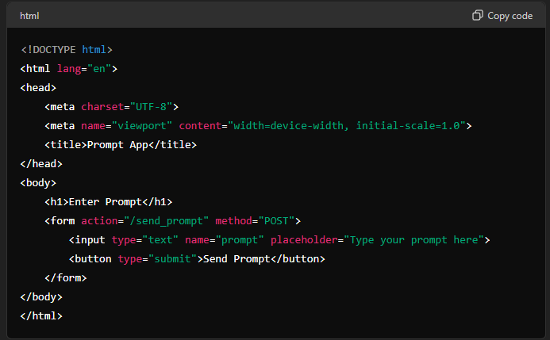
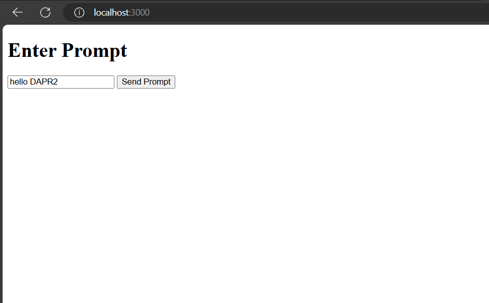
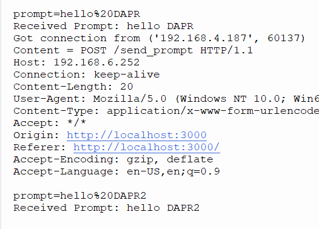

Document your work on the group work page and reflect on your individual page what you learned.
Individual Assignment
Write an application that interfaces a user with an input and/or output device(s) on a board that you made.
Group Assignment
This week we were asked to characterize different programs and tools that could be used as interfaces for our projects. In the time that we have worked on different projects we used Processing to run our Machine Design week. At this point, Tom was also using an HTML Web App to run his Archiblox project so we chose to compare those two. Using ChatGPT I did some reasearch on the differences and similarities that I did not see off the cuff.
Processing

Processing is designed specifically for visual arts and creative coding, making it an excellent choice for projects involving interactive graphics, visualizations, and digital art. It runs in the Processing Development Environment (PDE) and uses a language based on Java, with an option to code in Python. Processing excels in creating graphics and animations due to its extensive library of built-in functions tailored for these tasks. The platform is accessible for beginners in visual arts and programming. Applications developed in Processing can be run as standalone programs.
HTML
HTML we are familar with because we have made this website with. It is a markup language used to structure web content, typically combined with CSS for styling and JavaScript for adding interactivity. Unlike Processing, HTML does not directly support programming for interactivity; it relies on JavaScript for such capabilities. HTML-based projects run in web browsers, making them ideal for web applications. Although HTML can handle graphics and animations using the canvas element and CSS, more complex tasks usually require additional JavaScript libraries such as p5.js.
Similarities
Both Processing and HTML (with JavaScript) let you create interactive user interfaces where users can click, type, and interact with visual elements. They both support 2D and 3D graphics—Processing has it built-in, while HTML uses things like WebGL and libraries like Three.js for 3D. They handle events like mouse clicks and key presses; Processing has built-in functions for this, and HTML uses JavaScript. Both are open-source with lots of community support and plenty of libraries and tools available. They're also popular in education for teaching programming, graphics, and interactive design.
Building a WebApp for DAP-R
This week was a difficult for me because I did not have any component of my project that really worked with my final project that would interface with a webapp. I wanted DAP-R to be a stand alone program that did not have to talk to the chip.
Then I remembered that I wanted DAP-R to be able to communicate with people that were coming to visit the lab and an idea dawned on me. I could get DAP-R to communicate with the screen that he was using originally so what I decided was to use the esp32s3 chips that we were provided with and try to teach DAP-R how to talk the same way babies do, like a parrot.
The goal was simple, create a webapp that would allow me to say or type something into an interface, then whatever I said would be echoed onto the screen that is DAP-R's face.
In essence what I wanted is the image above. How do I do that? I have no clue. So I went to ChatGPT and asked it to help me with this project.
I started with the prompt:

The Response
Basically what our friend GPT told me to do was break it into three parts:
Code a simple web app that took an input in through a text box
Code a Javascript program using Node.js to allow this HTML to communicate over the wifi to our chip
Code the chip in Thonny to receive this information and display it onto the screen.
This seemed simple enough because ChatGPT made it sound very drag and drop.
Setting up the Node.js server
The first thing that GPT had me do was set up a node.js server. This had to be done by creating afolder of your choice and running the commands:
npm init -y
npm install express body-parser
This had to be done using terminal on my windows computer as long as I had changed my directory to this point.
Once that was done I had to create a file in that server called app.js
app.js had the following code in it:
const express = require('express');
const bodyParser = require('body-parser');
const app = express();
const port = 3000;
// Middleware
app.use(bodyParser.urlencoded({ extended: false }));
app.use(express.static('public')); // Serve static files (e.g., HTML, CSS)
// Routes
app.get('/', (req, res) => {
res.sendFile(__dirname + '/public/index.html');
});
app.post('/send_prompt', (req, res) => {
const prompt = req.body.prompt;
// Example: sending prompt via HTTP to ESP32S3
// Implement your sending logic here
console.log('Received prompt:', prompt);
res.send('Prompt sent to ESP32S3');
});
// Start server
app.listen(port, () => {
console.log(`Server running at http://localhost:${port}`);
});
I cannot explain what it is doing well but I do know it allows it to send prompts to esp32 using html
Creating the HTML App
The next thing that GPT had me do was create the HTML app. Luckily we have been working with HTML this whole time so understanding what was going on was much easier here.

This createed a simple Webapp that only had an input box to read whatever I wanted DAP-R to say

Simple is what I needed and I would add more if I needed more later
Next I had to write the code to DAPR using Python
Python on ESP32
I set up the ESP32 like we learned in the earlier weeks and then uploaded the code that I was provided with
import network
from machine import Pin, I2C
import ssd1306
import ure as re
import socket
# Wi-Fi credentials
SSID = "your-ssid"
PASSWORD = "your-password"
# Connect to Wi-Fi
wlan = network.WLAN(network.STA_IF)
wlan.active(True)
wlan.connect(SSID, PASSWORD)
while not wlan.isconnected():
pass
print("Connected to Wi-Fi")
# Initialize I2C for SSD1306 display
i2c = I2C(-1, Pin(22), Pin(21)) # Pin assignments for SCL and SDA
oled = ssd1306.SSD1306_I2C(128, 64, i2c) # Initialize SSD1306 OLED display
# Set up socket
s = socket.socket(socket.AF_INET, socket.SOCK_STREAM)
s.bind(('0.0.0.0', 80))
s.listen(1)
print('Listening on port 80')
while True:
conn, addr = s.accept()
print('Got connection from', addr)
request = conn.recv(1024)
print('Content = %s' % request)
# Example: receive prompt and display on SSD1306
if b'prompt=' in request:
prompt = re.findall(b'prompt=([^&]*)', request)[0].decode('utf-8')
print('Received Prompt:', prompt)
# Clear previous display content
oled.fill(0)
# Display the prompt on SSD1306
oled.text(prompt, 0, 0)
oled.show()
# Respond to the client (optional)
conn.sendall(b'HTTP/1.1 200 OK\r\nContent-Type: text/html\r\n\r\n')
conn.sendall(b'Prompt received by ESP32 and displayed on SSD1306')
conn.close()
This code worked great but I ran into a few issues right off the bat. First off you have to write down your wifi information. I was working in the moonlighter so I had to look that up. Luckily it was a pretty open wifi network when it comes to port communication so I had no issues there. Second the ports that it is saying in the I2C line are wrong as per the SEEED XIAO ESP32s3.
If you are using the same chip I am i2c = I2C(-1, Pin(22), Pin(21)) # Pin assignments for SCL and SDA those numbers should be 7 and 6 respectively instead of 22 and 21 because of how I2c is set up in this system.
With that I thought I was done. I ran the python code and the esp32 successfully gave me the connect to wifi line. And then I went to the webapp running my node.js server. I typed in a prompt and then:
Nothing
I was wondering, because I did receive confirmation that the message was sent but not that it was received. My first thought was, how does the code know WHERE to send this. So I asked the code to add a line to the python script to tell me the IP address of the chip once connected and then asked GPT to add a line to the js code that targeted that IP Address.
It gave me these two lines of code:
ip_address = wlan.ifconfig()[0]
print("ESP32 IP Address:", ip_address)
Now my esp will print its IP over terminal command
And it completely overhauled the HTML to look like this:
Basically it aimed all the prompts to the IP address that is in the line that starts with: const esp32IpAddress
Firing up both systems again I ran the code and then it was a mixed success!
The chip kept receiving the message but it did not display anything instead I got an error titled: AttributeError: 'module' object has no attribute 'findall'
Dont always trust chatGPT
Because of the error above I started googling and trying solutions that I found to no avail. So I got the inkling to resort back to chatGPT. And I saw something I had never seen before. They apologized!
Apparently MicroPython does not have the findall program and its function needs to be hard coded. So Chat gave me a THIRD python code.
import network
from machine import Pin, I2C
import ssd1306
import socket
# Wi-Fi credentials
SSID = "your-ssid"
PASSWORD = "your-password"
# Connect to Wi-Fi
wlan = network.WLAN(network.STA_IF)
wlan.active(True)
wlan.connect(SSID, PASSWORD)
while not wlan.isconnected():
pass
print("Connected to Wi-Fi")
ip_address = wlan.ifconfig()[0]
print("ESP32 IP Address:", ip_address)
# Initialize I2C for SSD1306 display
i2c = I2C(-1, Pin(22), Pin(21)) # Pin assignments for SCL and SDA
oled = ssd1306.SSD1306_I2C(128, 64, i2c) # Initialize SSD1306 OLED display
# Set up socket
s = socket.socket(socket.AF_INET, socket.SOCK_STREAM)
s.bind(('0.0.0.0', 80))
s.listen(1)
print('Listening on port 80')
while True:
conn, addr = s.accept()
print('Got connection from', addr)
request = conn.recv(1024).decode('utf-8')
print('Content = %s' % request)
# Example: receive prompt and display on SSD1306
if 'prompt=' in request:
prompt_index = request.find('prompt=')
ampersand_index = request.find('&', prompt_index)
if ampersand_index == -1:
prompt = request[prompt_index + len('prompt='):]
else:
prompt = request[prompt_index + len('prompt='):ampersand_index]
prompt = prompt.replace('+', ' ') # Replace '+' with spaces
prompt = prompt.replace('%20', ' ') # Replace '%20' with spaces
prompt = prompt.replace('%21', '!') # Replace '%21' with '!'
prompt = prompt.replace('%22', '"') # Replace '%22' with '"'
prompt = prompt.replace('%23', '#') # Replace '%23' with '#'
prompt = prompt.replace('%24', '$') # Replace '%24' with '$'
prompt = prompt.replace('%25', '%') # Replace '%25' with '%'
prompt = prompt.replace('%26', '&') # Replace '%26' with '&'
prompt = prompt.replace('%27', "'") # Replace '%27' with "'"
prompt = prompt.replace('%28', '(') # Replace '%28' with '('
prompt = prompt.replace('%29', ')') # Replace '%29' with ')'
prompt = prompt.replace('%2A', '*') # Replace '%2A' with '*'
prompt = prompt.replace('%2B', '+') # Replace '%2B' with '+'
prompt = prompt.replace('%2C', ',') # Replace '%2C' with ','
prompt = prompt.replace('%2D', '-') # Replace '%2D' with '-'
prompt = prompt.replace('%2E', '.') # Replace '%2E' with '.'
prompt = prompt.replace('%2F', '/') # Replace '%2F' with '/'
prompt = prompt.replace('%3A', ':') # Replace '%3A' with ':'
prompt = prompt.replace('%3B', ';') # Replace '%3B' with ';'
prompt = prompt.replace('%3C', '<') # Replace '%3C' with '<'
prompt = prompt.replace('%3D', '=') # Replace '%3D' with '='
prompt = prompt.replace('%3E', '>') # Replace '%3E' with '>'
prompt = prompt.replace('%3F', '?') # Replace '%3F' with '?'
prompt = prompt.replace('%40', '@') # Replace '%40' with '@'
prompt = prompt.replace('%5B', '[') # Replace '%5B' with '['
prompt = prompt.replace('%5C', '\\') # Replace '%5C' with '\'
prompt = prompt.replace('%5D', ']') # Replace '%5D' with ']'
prompt = prompt.replace('%5E', '^') # Replace '%5E' with '^'
prompt = prompt.replace('%5F', '_') # Replace '%5F' with '_'
prompt = prompt.replace('%60', '`') # Replace '%60' with '`'
prompt = prompt.replace('%7B', '{') # Replace '%7B' with '{'
prompt = prompt.replace('%7C', '|') # Replace '%7C' with '|'
prompt = prompt.replace('%7D', '}') # Replace '%7D' with '}'
prompt = prompt.replace('%7E', '~') # Replace '%7E' with '~'
print('Received Prompt:', prompt)
# Clear previous display content
oled.fill(0)
# Display IP address and the prompt on SSD1306
oled.text("IP: " + ip_address, 0, 0)
oled.text(prompt, 0, 20) # Display prompt below IP address
oled.show()
# Respond to the client (optional)
response = "HTTP/1.1 200 OK\r\nContent-Type: text/html\r\n\r\n"
conn.sendall(response.encode('utf-8'))
conn.sendall(b'Prompt received by ESP32 and displayed on SSD1306')
conn.close()
As you can see above apparently the problem was that it was receiving all of the spaces as those codes and couldn't translate. So this time I ran the code one more time and SUCCESS! There was full communication on the ESP32 which prompted this back on the terminal in Thonny like this:

And when I looked down at the screen:
When I tried to change the prompt and ran the webapp it also worked perfectly!
If you have the same setup and want to run this on an ESP32s3 feel free to use the code below: